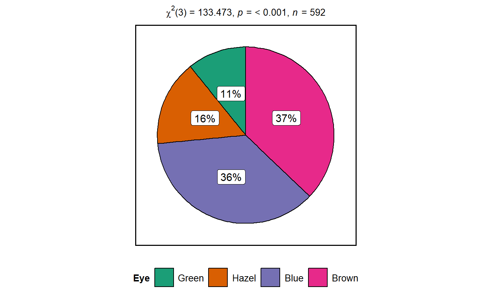

Pie charts for categorical data with statistical details included in the plot as a subtitle.
ggpiestats(data, main, condition = NULL, counts = NULL, ratio = NULL, paired = FALSE, factor.levels = NULL, stat.title = NULL, sample.size.label = TRUE, bf.message = FALSE, sampling.plan = "indepMulti", fixed.margin = "rows", prior.concentration = 1, title = NULL, caption = NULL, nboot = 25, legend.title = NULL, facet.wrap.name = NULL, k = 3, perc.k = 0, slice.label = "percentage", facet.proptest = TRUE, ggtheme = ggplot2::theme_bw(), ggstatsplot.layer = TRUE, package = "RColorBrewer", palette = "Dark2", direction = 1, messages = TRUE)
Arguments
| data | The data as a data frame (matrix or tables will not be accepted). |
|---|---|
| main | The variable to use as the rows in the contingency table. |
| condition | The variable to use as the columns in the contingency table. |
| counts | A string naming a variable in data containing counts, or |
| ratio | A vector of numbers: the expected proportions for the proportion
test. Default is |
| paired | Logical indicating whether data came from a within-subjects
design study (Default: |
| factor.levels | A character vector with labels for factor levels of
|
| stat.title | Title for the effect being investigated with the chi-square
test. The default is |
| sample.size.label | Logical that decides whether sample size information
should be displayed for each level of the grouping variable |
| bf.message | Logical that decides whether to display a caption with
results from bayes factor test in favor of the null hypothesis (default:
|
| sampling.plan | Character describing the sampling plan. Possible options
are |
| fixed.margin | For the independent multinomial sampling plan, which
margin is fixed ( |
| prior.concentration | Specifies the prior concentration parameter, set
to |
| title | The text for the plot title. |
| caption | The text for the plot caption. |
| nboot | Number of bootstrap samples for computing effect size (Default:
|
| legend.title | Title text for the legend. |
| facet.wrap.name | The text for the facet_wrap variable label. |
| k | Number of digits after decimal point (should be an integer)
(Default: |
| perc.k | Numeric that decides number of decimal places for percentage
labels (Default: |
| slice.label | Character decides what information needs to be displayed
on the label in each pie slice. Possible options are |
| facet.proptest | Decides whether proportion test for |
| ggtheme | A function, |
| ggstatsplot.layer | Logical that decides whether |
| package | Name of package from which the palette is desired as string or symbol. |
| palette | If a character string (e.g., |
| direction | |
| messages | Decides whether messages references, notes, and warnings are
to be displayed (Default: |
References
https://cran.r-project.org/package=ggstatsplot/vignettes/ggpiestats.html
Examples
# for reproducibility set.seed(123) # simple function call with the defaults (without condition) ggstatsplot::ggpiestats( data = ggplot2::msleep, main = vore, perc.k = 1, k = 2 )# simple function call with the defaults (with condition) ggstatsplot::ggpiestats( data = datasets::mtcars, main = vs, condition = cyl, bf.message = TRUE, nboot = 10, factor.levels = c("0 = V-shaped", "1 = straight"), legend.title = "Engine" )#> Note: Results from faceted one-sample proportion tests:#>#> # A tibble: 3 x 7 #> condition `0` `1` `Chi-squared` df `p-value` significance #> <fct> <chr> <chr> <dbl> <dbl> <dbl> <chr> #> 1 4 9.09% 90.91% 7.36 1 0.007 ** #> 2 6 42.86% 57.14% 0.143 1 0.705 ns #> 3 8 100.00% <NA> 14 1 0 *** #> Note: 95% CI for Cramer's V was computed with 10 bootstrap samples.#>#> #>#> #> #>